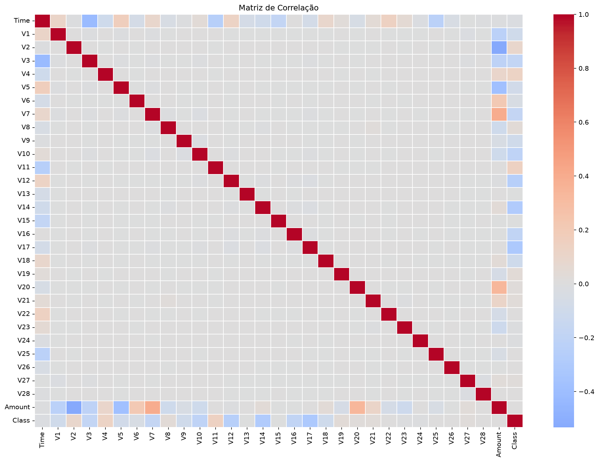
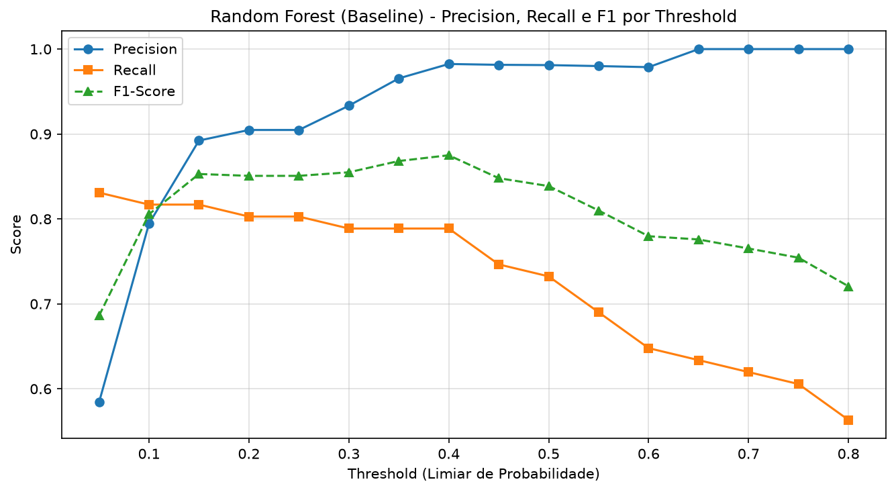
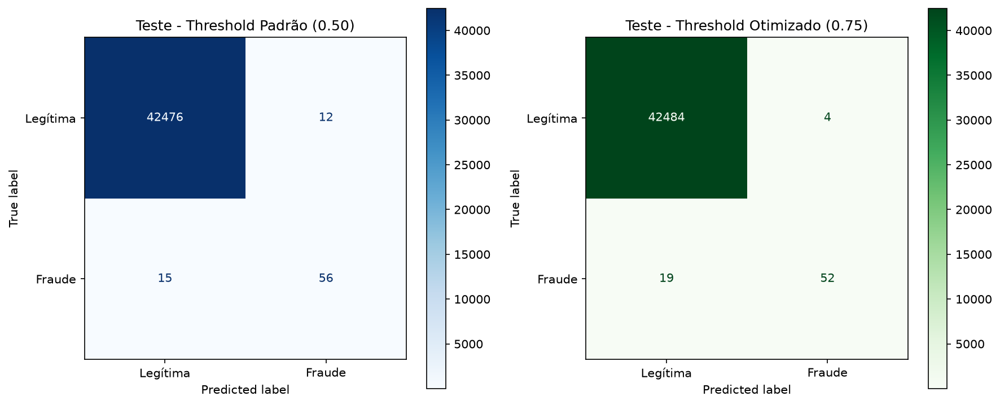

MACHINE LEARNING
Credit Card Fraud Detection
End-to-end Machine Learning pipeline audited against data leakage to detect fraudulent credit card transactions under extreme class imbalance (0.17% fraud), combining cyclical feature engineering, SMOTE, PR-AUC hyperparameter optimization and decision threshold calibration.
View repository on GitHub ↗Overview
Financial institutions and payment processors must detect fraudulent transactions in real time without disrupting legitimate customers. To address this problem, this project uses the public Credit Card Fraud Detection dataset (ULB / Kaggle), which contains real transactions made by European cardholders over a 48-hour period.
The dataset provides 28 numerical features obtained via PCA transformation (V1 through V28, anonymized to protect sensitive cardholder data), alongside the elapsed time in seconds since the first transaction (Time), the transaction value (Amount) and the target label (0 for legitimate and 1 for fraud).
The problem poses two core technical challenges:
- Extreme class imbalance: after data cleaning, only 473 out of 283,726 unique transactions are fraudulent (0.17%, or roughly 17 frauds per 10,000 transactions). Raw accuracy is uninformative here, as a dummy classifier predicting every transaction as legitimate achieves 99.83% accuracy while detecting 0% of frauds;
- Asymmetric error costs (Precision vs. Recall): a false negative (approving a fraudulent transaction) leads to direct financial loss via chargebacks, whereas a false positive (blocking a legitimate customer) causes friction, dissatisfaction and lost revenue.
Objectives and methodology
The objective was to build a reproducible, leakage-free pipeline that maximizes the area under the Precision-Recall curve (Average Precision / PR-AUC) and calibrates the classification probability threshold (Threshold Tuning) to provide clear operational trade-offs.
How it was developed
The pipeline was built in Python with Scikit-Learn and Imbalanced-Learn, following six stages:
- Data cleaning and leakage prevention: the raw dataset contains 284,807 rows, of which 1,081 are exact duplicates (including 19 duplicated fraud records). All duplicates were removed prior to splitting the dataset so identical copies could not land in both training and test partitions and artificially inflate tree-based model performance;
- Stratified split (70% / 15% / 15%): partitioning into Training (198,608 transactions, 331 frauds), Validation (42,559 transactions, 71 frauds) and a held-out Test set (42,559 transactions, 71 frauds), preserving the 0.1668% fraud ratio across all splits;
- Exploratory data analysis (EDA): comparing transaction values by class revealed that fraudulent transactions have a higher mean ($123.87 vs. $88.47 for legitimate ones) but a much lower median ($9.82 vs. $22.00), reflecting the common pattern of small test micro-transactions prior to larger charges. Temporal analysis also showed pronounced fraud risk spikes during early morning hours (1 a.m. to 6 a.m.) and late morning (11 a.m. to 12 p.m.);
- Encapsulated feature engineering: applying a logarithmic transform log1p(Amount) to stabilize the right-skewed tail, cyclical trigonometric encoding of the hour of day (sine and cosine extracted from Time) and z-score standardization via StandardScaler inside a ColumnTransformer;
- Modeling and imbalance handling: systematic validation-set comparison across baseline classifiers (Dummy, Logistic Regression, Decision Tree, Random Forest and HistGradientBoosting), cost-sensitive class weighting (class_weight="balanced") and synthetic oversampling via SMOTE (sampling_strategy=0.10, executed strictly after feature scaling and only inside training folds);
- Hyperparameter tuning and threshold calibration: optimizing the pipeline with RandomizedSearchCV using 3-fold StratifiedKFold (refit="average_precision") and sweeping decision thresholds from 0.05 to 0.80.
Prioritizing PR-AUC over ROC-AUC was critical: on the validation set, Logistic Regression achieved a higher ROC-AUC of 0.96 (vs. 0.94 for Random Forest), yet its PR-AUC was only 0.70 (vs. 0.83 for Random Forest). Because the False Positive Rate divides false alarms by 42,488 true negatives, ROC curves mask hundreds of false blocks that Precision-Recall curves expose directly.
Exploratory analysis and modeling







Note: The chart labels above are in Portuguese as generated by the original script. The complete Python source code, documented Jupyter Notebook and local execution instructions are available in the project repository on GitHub ↗.
Results
Evaluating the winning pipeline (ColumnTransformer + SMOTE + tuned Random Forest) once on the held-out test set (42,488 legitimate transactions and 71 frauds) confirmed the gains from threshold calibration over the default cutoff:
- Default threshold (0.50): 82.35% Precision, 78.87% Recall and 80.58% F1-Score (56 of 71 frauds detected, with 12 false positives);
- Optimized threshold (0.75): 92.86% Precision, 73.24% Recall and 81.89% F1-Score (52 of 71 frauds detected, cutting false positives down to just 4 out of 42,488 legitimate purchases — a false-block rate below 0.01%).
Based on this probability calibration, a practical production deployment can operate in two protection tiers: automatic preventive blocking for probabilities of 0.75 or higher (92.86% precision, minimizing customer friction) and step-up authentication (push confirmation via mobile app or SMS) for intermediate scores between 0.20 and 0.75, capturing over 83% of total frauds without hard-blocking the card upfront.
Limitations and future improvements
Because features V1 through V28 are anonymized principal components, it is not possible to engineer domain-specific banking features such as cardholder transaction velocity, geographic distance or merchant risk profiles, and the 48-hour window does not capture long-term concept drift. As future work, I plan to benchmark gradient boosting libraries (LightGBM and XGBoost), apply probability calibration (CalibratedClassifierCV) and incorporate an instance-dependent financial cost matrix weighted by transaction amount.